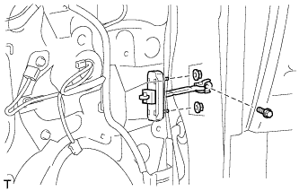
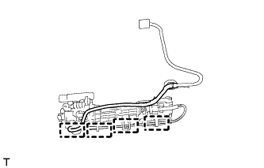
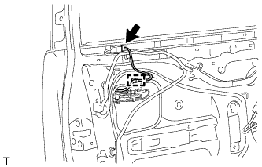
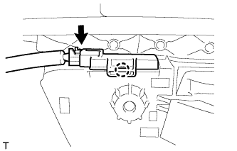

ПЕРЕДНЯЯ ДВЕРЬ > ПОВТОРНАЯ СБОРКА |
| 1. УСТАНОВИТЕ ПОДУШКУ ПАНЕЛИ ПЕРЕДНЕЙ ДВЕРИ |
Установите новую подушку панели передней двери и закрепите ее фиксатором.
| 2. УСТАНОВИТЕ НИЖНИЙ НАРУЖНЫЙ УПЛОТНИТЕЛЬ ЛЕВОЙ ПЕРЕДНЕЙ ДВЕРИ |
 |
Положение нового нижнего наружного уплотнителя передней двери показано на рисунке.
| Область | Заданные условия |
| А | +/-1,0 мм (0,039 дюйма) от конца |
| 3. УСТАНОВИТЕ НАРУЖНЫЙ УПЛОТНИТЕЛЬ ЛЕВОЙ ПЕРЕДНЕЙ ДВЕРИ |
 |
Положение нового наружного уплотнителя передней двери показано на рисунке.
| Участок | Заданные условия |
| А | +/-1,0 мм (0,039 дюйма) от конца |
| 4. УСТАНОВИТЕ ЛЕВУЮ СВЕТОМАСКИРОВОЧНУЮ ЛЕНТУ № 1 |
 |
Положение новой светомаскировочной ленты показано на рисунке.
| Участок | Заданные условия |
| А | 2–4 мм (0,078–0,158 дюйма) |
| B | 4 - 6 мм (0,157 - 0,236 дюйма) |
| 5. УСТАНОВИТЕ ЗАДНИЙ МОЛДИНГ РАМЫ ОКНА ЛЕВОЙ ПЕРЕДНЕЙ ДВЕРИ |
Очистите поверхность кузова автомобиля.
С помощью нагревательной лампы разогрейте поверхность кузова.
Снимите двухстороннюю клейкую ленту с поверхности кузова автомобиля.
Удалите остатки клейкой ленты чистящим средством.
Установите новый задний молдинг оконной рамы передней двери.
С помощью нагревательной лампы прогрейте новый молдинг задней рамы окна передней двери и поверхность кузова автомобиля.
Снимите с поверхности заднего молдинга рамы окна передней двери отслаивающуюся бумагу.
Закрепите фиксатор и двухстороннюю клейкую ленту, чтобы установить задний молдинг рамы окна передней двери.
Установите новый фиксатор молдинга рамы окна двери.
| 6. УСТАНОВИТЕ МОЛДИНГ РЕМНЯ ЛЕВОЙ ПЕРЕДНЕЙ ДВЕРИ |
Установите молдинг ремня передней двери, закрепив его 6 захватами.
| 7. УСТАНОВИТЕ УПЛОТНИТЕЛЬ ЛЕВОЙ ПЕРЕДНЕЙ ДВЕРИ |
 |
Установите новый уплотнитель передней двери и закрепите его 21 фиксатором.
| 8. УСТАНОВИТЕ ОГРАНИЧИТЕЛЬ ОТКРЫВАНИЯ ЛЕВОЙ ПЕРЕДНЕЙ ДВЕРИ В СБОРЕ |
Нанесите на трущиеся поверхности ограничителя открывания передней двери универсальную консистентную смазку.
|  |
Установите дверную пружину на дверную панель и закрепите ее 2 гайками.
Нанесите герметик на резьбу болта.
Установите ограничитель открывания передней двери и закрепите его болтом.
| 9. УСТАНОВИТЕ ЖЕСТКУЮ ПОДКЛАДКУ ПЕРЕДНЕЙ ДВЕРИ № 2 |
Очистите установочную поверхность.
С помощью нагревательной лампы разогрейте установочную поверхность.
| Параметр / Устройство | Температура |
| Кузов автомобиля | 40 - 60°C (104 - 140°F) |
Снимите двухстороннюю клейкую ленту с установочной поверхности.
Удалите остатки клейкой ленты чистящим средством.
Установите новую жесткую подкладку двери.
С помощью нагревательной лампы разогрейте новую жесткую подкладку передней двери № 2 и установочную поверхность.
| Параметр / Устройство | Температура |
| Жесткая подкладка двери | 20 - 30°C (68 - 86°F) |
| Кузов автомобиля | 40 - 60°C (104 - 140°F) |
Снимите с поверхности жесткой подкладки двери отслаивающуюся бумагу.
Закрепите 2 зажима и двухстороннюю клейкую ленту, чтобы установить жесткую подкладку передней двери № 2.
Вверните 2 болта.
| 10. УСТАНОВИТЕ ЗАПОРНЫЙ СТЕРЖЕНЬ ЗАМКА ЛЕВОЙ ПЕРЕДНЕЙ ДВЕРИ |
 |
Установите запорный стержень замка передней двери, как показано на рисунке.
| 11. УСТАНОВИТЕ ЖГУТ ПРОВОДОВ ЛЕВОЙ ПЕРЕДНЕЙ ДВЕРИ № 2 (для моделей с интеллектуальной системой посадки и запуска) |
|  |
Закрепите 4 зажима и установите жгут проводов передней двери № 2.
| 12. УСТАНОВИТЕ РАМУ НАРУЖНОЙ РУЧКИ ЛЕВОЙ ПЕРЕДНЕЙ ДВЕРИ В СБОРЕ |
Нанесите на рабочие поверхности трения рамы наружной ручки передней двери в сборе универсальную консистентную смазку.
 |
Введите в зацепление захват и заверните гайку ручки двери.
Установите раму наружной ручки передней двери в сборе и закрепите ее винтом с помощью торцевого ключа "TORX" (T30).
Для моделей с системой посадки и запуска:
|  |
Закрепите зажим.
Подсоедините разъем жгута проводов передней двери № 2 к жгуту проводов передней двери.
| 13. УСТАНОВИТЕ ЗАДНЮЮ НАКЛАДКУ НАРУЖНОЙ РУЧКИ ЛЕВОЙ ПЕРЕДНЕЙ ДВЕРИ |
Введите в зацепление 2 захвата и установите заднюю накладку наружной ручки передней двери.
| 14. УСТАНОВИТЕ ПЕРЕДНЮЮ НАКЛАДКУ НАРУЖНОЙ РУЧКИ ЛЕВОЙ ПЕРЕДНЕЙ ДВЕРИ |
Введите в зацепление 3 захвата и установите переднюю накладку наружной ручки передней двери.
| 15. УСТАНОВИТЕ НАРУЖНУЮ РУЧКУ ПЕРЕДНЕЙ ЛЕВОЙ ДВЕРИ В СБОРЕ |
 |
Вставьте переднюю часть наружной ручки передней двери в сборе в раму наружной ручки передней двери.
Вставьте заднюю часть наружной ручки передней двери в сборе в раму наружной ручки передней двери, затем сдвиньте наружную ручку передней двери в сборе в направлении передней части автомобиля и установите ее.
 |
Переместите рычаг в направлении, указанном на рисунке стрелкой, чтобы зафиксировать наружную ручку двери в сборе.
 |
Подсоедините разъем.
Введите в зацепление 2 захвата.
| 16. УСТАНОВИТЕ ВНУТРЕННИЙ ТРОС ЗАМКА ЛЕВОЙ ПЕРЕДНЕЙ ДВЕРИ В СБОРЕ |
Установите внутренний трос замка передней двери в сборе.
Введите в зацепление 3 захвата.
| 17. УСТАНОВИТЕ ТРОС ДИСТАНЦИОННОГО УПРАВЛЕНИЯ ЗАМКОМ ЛЕВОЙ ПЕРЕДНЕЙ ДВЕРИ В СБОРЕ |
Установите трос дистанционного управления замком передней двери в сборе.
| 18. УСТАНОВИТЕ ЗАМОК ПЕРЕДНЕЙ ЛЕВОЙ ДВЕРИ В СБОРЕ |
Нанесите на рабочие поверхности трения замка передней двери универсальную консистентную смазку.
Установите новое уплотнение жгута проводов замка двери на замок передней двери в сборе.
Вставьте запорный стержень замка передней двери в замок передней двери в сборе.
| *A | Для моделей без системы двойной блокировки |
| *B | Для моделей с системой двойной блокировки |
 | Сдвиньте |
Убедитесь, что запорный стержень надежно удерживается в замке передней двери.
Установите замок передней двери и закрепите его 3 винтами с помощью торцевого ключа "TORX" T30.
Подсоедините разъем.
| 19. УСТАНОВИТЕ КРЫШКУ НАРУЖНОЙ РУЧКИ ПРАВОЙ ПЕРЕДНЕЙ ДВЕРИ (со стороны переднего пассажира) |
 |
Установите крышку наружной ручки передней двери и закрепите ее винтом с помощью торцевого ключа "TORX" (T30).
 |
Вставьте пробку отверстия.
| 20. УСТАНОВИТЕ КРЫШКУ НАРУЖНОЙ РУЧКИ ПЕРЕДНЕЙ ЛЕВОЙ ДВЕРИ (со стороны водителя) |
Введите в зацепление захват, чтобы установить крышку наружной ручки передней двери на цилиндре замка передней двери.
| 21. УСТАНОВИТЕ КРЫШКУ НАРУЖНОЙ РУЧКИ ПЕРЕДНЕЙ ДВЕРИ С ЦИЛИНДРОМ ЗАМКА В СБОРЕ (со стороны водителя) |
Установите крышку наружной ручки передней двери с цилиндром замка в сборе.
 |
Установите цилиндр замка передней двери и закрепите его винтом с помощью торцевого ключа "TORX" (T30).
 |
Вставьте пробку отверстия.
| 22. УСТАНОВИТЕ ЗАДНЮЮ НИЖНЮЮ РАМУ ПЕРЕДНЕЙ ЛЕВОЙ ДВЕРИ В СБОРЕ |
Установите заднюю нижнюю раму передней двери и закрепите ее болтом, как показано на рисунке.
| 23. УСТАНОВИТЕ НАПРАВЛЯЮЩУЮ СТЕКЛА ЛЕВОЙ ПЕРЕДНЕЙ ДВЕРИ |
 |
Установите направляющую стекла передней двери.
| 24. УСТАНОВИТЕ ЛЕВУЮ ОБЛИЦОВКУ РАМЫ ДВЕРИ |
 |
Установите новую облицовку рамы двери и закрепите ее фиксатором.
| 25. УСТАНОВИТЕ ЭЛЕКТРОДВИГАТЕЛЬ СТЕКЛОПОДЪЕМНИКА ЛЕВОЙ ПЕРЕДНЕЙ ДВЕРИ В СБОРЕ |
 |
Нанесите универсальную консистентную смазку на все трущиеся и вращающиеся детали электродвигателя стеклоподъемника.
Закрепите электродвигатель стеклоподъемника 3 винтами с помощью торцевого ключа "TORX" T25.
| 26. УСТАНОВИТЕ СТЕКЛОПОДЪЕМНИК ЛЕВОЙ ПЕРЕДНЕЙ ДВЕРИ В СБОРЕ |
Нанесите на рабочие поверхности трения стеклоподъемника передней двери в сборе универсальную консистентную смазку.
Заверните болт временного крепления в стеклоподъемник передней двери в сборе.
Временно установите стеклоподъемник передней двери и закрепите его болтом временного крепления.
| *1 | Болт временного крепления |
Не затягивая, вверните 5 болтов, а затем затяните их и болт временного крепления.
Подсоедините разъем.
| 27. УСТАНОВИТЕ СТЕКЛО ЛЕВОЙ ПЕРЕДНЕЙ ДВЕРИ В СБОРЕ |
Подсоедините провод к отрицательному (-) выводу аккумуляторной батареи.
Подсоедините главный переключатель электрических стеклоподъемников в сборе и сместите стекло передней двери таким образом, чтобы были видны места установки болтов стекла двери.
Отсоедините провод от отрицательного (-) вывода аккумуляторной батареи и снимите главный выключатель электрических стеклоподъемников в сборе.
 |
Вставьте стекло передней двери в панель передней двери вдоль направляющей стекла передней двери в направлении, указанном на рисунке стрелками, и в порядке, показанном на рисунке.
 |
Закрепите стекло передней двери в сборе 2 болтами.
| 28. УСТАНОВИТЕ ЛЕВОЕ НАРУЖНОЕ ЗЕРКАЛО ЗАДНЕГО ВИДА В СБОРЕ |
Введите в зацепление захват, чтобы закрепить наружное зеркало заднего вида, а затем заверните 3 гайки.
Подсоедините разъем.
| 29. УСТАНОВИТЕ КРЫШКУ ТЕХНОЛОГИЧЕСКОГО ОТВЕРСТИЯ ЛЕВОЙ ПЕРЕДНЕЙ ДВЕРИ |
Наклейте новую бутиловую ленту на панель передней двери.
 |
Проденьте трос дистанционного управления замком передней двери в сборе и внутренний трос замка передней двери в сборе через новую крышку технологического отверстия передней двери.
| *1 | Контрольная точка |
Закрепите крышку технологического отверстия передней двери, используя контрольные точки на панели передней двери.
 |
Установите 2 зажима.
Вверните болт, чтобы закрепить жгут проводов передней двери.
| 30. УСТАНОВИТЕ ЛЕВЫЙ БОКОВОЙ ДАТЧИК СИСТЕМЫ SRS |
Выключите зажигание.
Отсоедините провод от отрицательного (-) вывода аккумуляторной батареи.
Установите боковой датчик системы SRS и закрепите его болтом.
Убедитесь, что крепление бокового датчика системы SRS не ослаблено.
Подсоедините разъем.
| 31. УСТАНОВИТЕ ПЕРЕДНИЙ ДИНАМИК № 1 В СБОРЕ |
Временно установите динамик, введя в зацепление 2 захвата динамика с панелью двери.
 |
Закрепите динамик 4 гайками в порядке, показанном на рисунке.
Подсоедините разъем динамика.
| 32. УСТАНОВИТЕ ПЕРЕКЛЮЧАТЕЛЬ ЗАПОМИНАЮЩЕГО УСТРОЙСТВА СИДЕНЬЯ (с системой запоминания положений сидений) |
 |
Установите переключатель и закрепите его 2 винтами.
| 33. УСТАНОВИТЕ ВНУТРЕННЮЮ РУЧКУ ЛЕВОЙ ПЕРЕДНЕЙ ДВЕРИ В СБОРЕ |
 |
Введите в зацепление направляющую и 2 захвата, чтобы установить внутреннюю ручку передней двери на панель облицовки передней двери.
Заверните 2 винта.
 |
Вверните 8 винтов, чтобы установить верхний поручень левой двери в сборе.
| 34. УСТАНОВИТЕ ПЕРЕКЛЮЧАТЕЛЬ ЭЛЕКТРИЧЕСКОГО СТЕКЛОПОДЪЕМНИКА В СБОРЕ (для двери со стороны переднего пассажира) |
Введите в зацепление 2 захвата и установите переключатель электрического стеклоподъемника в сборе.
| 35. УСТАНОВИТЕ ГЛАВНЫЙ ПЕРЕКЛЮЧАТЕЛЬ СЕТИ МУЛЬТИПЛЕКСНОЙ СВЯЗИ (со стороны водителя) |
Установите главный переключатель сети мультиплексной связи и закрепите его 3 винтами.
| 36. УСТАНОВИТЕ ЛАМПУ ПОДСВЕТКИ ВНУТРЕННЕЙ РУЧКИ ЛЕВОЙ ПЕРЕДНЕЙ ДВЕРИ |
|  |
Зацепите захват, чтобы закрепить лампу.
Подсоедините разъем.
| 37. УСТАНОВИТЕ ЛАМПУ ОСВЕЩЕНИЯ САЛОНА № 2 В СБОРЕ |
 |
Поверните лампу в направлении, указанном стрелкой, чтобы установить ее.
Закрепите зажим.
Подсоедините разъем.
| 38. УСТАНОВИТЕ ЛАМПУ ОСВЕЩЕНИЯ ПРОЕМА ЛЕВОЙ ПЕРЕДНЕЙ ДВЕРИ В СБОРЕ |
Подсоедините разъем.
Введите в зацепление 2 захвата и установите лампу.
| 39. УСТАНОВИТЕ ВНУТРЕННИЙ УПЛОТНИТЕЛЬ СТЕКЛА ЛЕВОЙ ПЕРЕДНЕЙ ДВЕРИ |
 |
Установите внутренний уплотнитель стекла передней двери.
| 40. УСТАНОВИТЕ ПАНЕЛЬ ОБЛИЦОВКИ ЛЕВОЙ ПЕРЕДНЕЙ ДВЕРИ В СБОРЕ |
 |
Подсоедините трос дистанционного управления замком передней двери в сборе и внутренний трос замка передней двери в сборе.
Подсоедините 2 разъема.
Для моделей с запоминающими устройствами сидений:
Подсоедините разъемы.
 |
Закрепите панель облицовки передней двери с помощью 4 захватов на внутреннем уплотнителе стекла передней двери, как показано на рисунке.
 |
Введите в зацепление 12 фиксаторов и держатель панели облицовки передней двери, чтобы установить панель облицовки передней двери.
Вверните 3 винта.
| 41. УСТАНОВИТЕ ЛЕВУЮ НАКЛАДКУ ВЕРХНЕГО ПОРУЧНЯ |
 |
Введите в зацепление 8 захватов и установите облицовку верхнего поручня.
| 42. УСТАНОВИТЕ ДЕРЖАТЕЛЬ ВНУТРЕННЕЙ РУЧКИ ЛЕВОЙ ДВЕРИ № 2 |
 |
Установите держатель внутренней ручки и закрепите его 3 захватами.
| 43. УСТАНОВИТЕ ОБЛИЦОВКУ КРОНШТЕЙНА НИЖНЕЙ РАМЫ ЛЕВОЙ ПЕРЕДНЕЙ ДВЕРИ |
Введите в зацепление 2 захвата, чтобы установить облицовку кронштейна нижней рамы передней двери.
| 44. УСТАНОВИТЕ ДЕРЖАТЕЛЬ ВНУТРЕННЕЙ РУЧКИ ЛЕВОЙ ДВЕРИ № 2 |
 |
Введите в зацепление 3 захвата, чтобы установить оправу внутренней ручки передней двери.
| 45. ПОДСОЕДИНИТЕ ПРОВОД К ОТРИЦАТЕЛЬНОМУ ВЫВОДУ АККУМУЛЯТОРНОЙ БАТАРЕИ |
| 46. ИНИЦИАЛИЗИРУЙТЕ СИСТЕМУ УПРАВЛЕНИЯ ЭЛЕКТРИЧЕСКИМИ СТЕКЛОПОДЪЕМНИКАМИ |
Выполните инициализацию электрического стеклоподъемника (Нажмите здесь).
| 47. ПРОВЕРЬТЕ КОНТРОЛЬНУЮ ЛАМПУ АВАРИЙНОГО СОСТОЯНИЯ SRS |
Проверьте контрольную лампу аварийного состояния SRS (Нажмите здесь).
| 48. ОТРЕГУЛИРУЙТЕ ПОЛОЖЕНИЕ БОКОВОЙ ТЕЛЕКАМЕРЫ В СБОРЕ (для моделей с монитором бокового обзора) |
Для моделей с монитором заднего вида:
Отрегулируйте положение боковой телекамеры (Нажмите здесь).
Для моделей с системой помощи при парковке:
Отрегулируйте положение боковой телекамеры (Нажмите здесь).